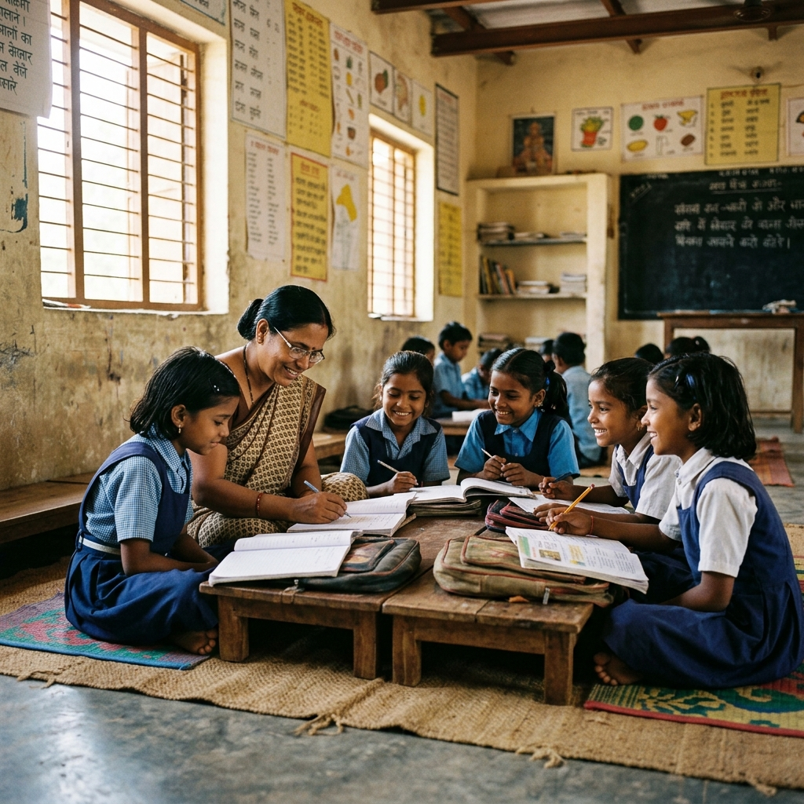
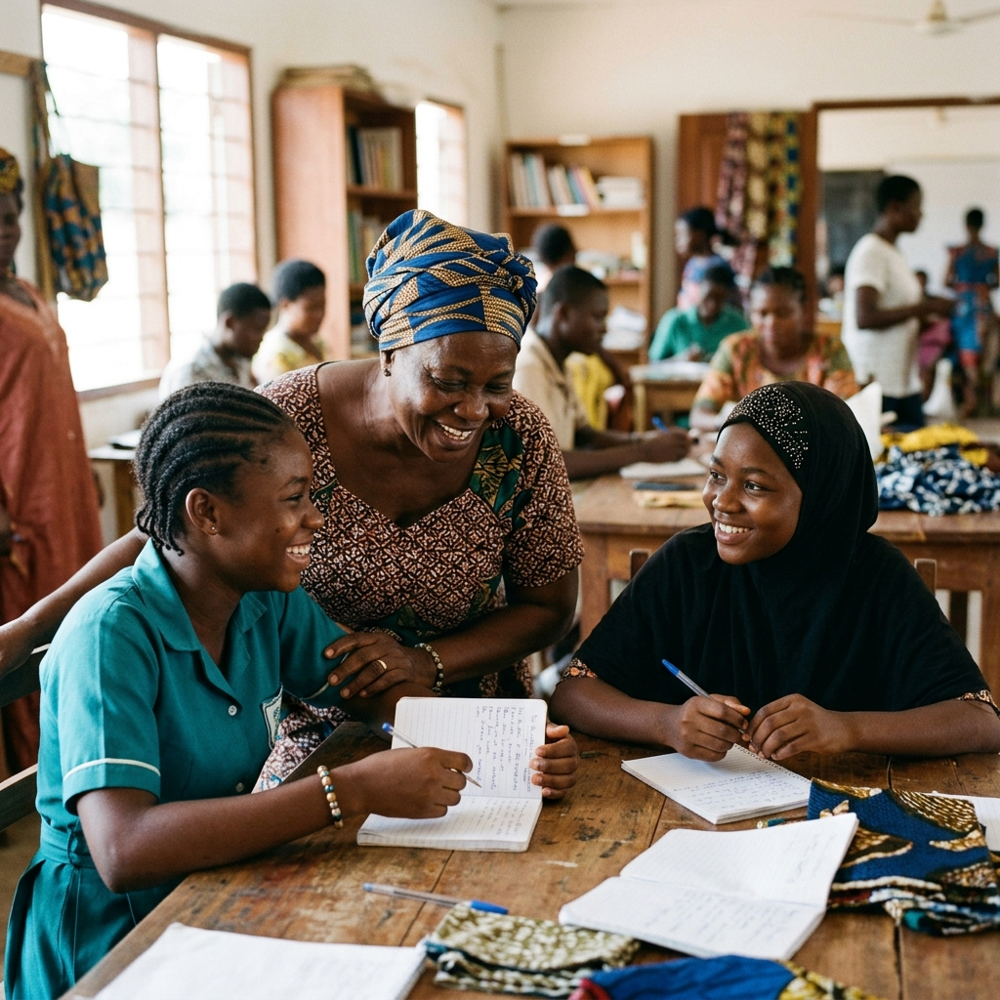
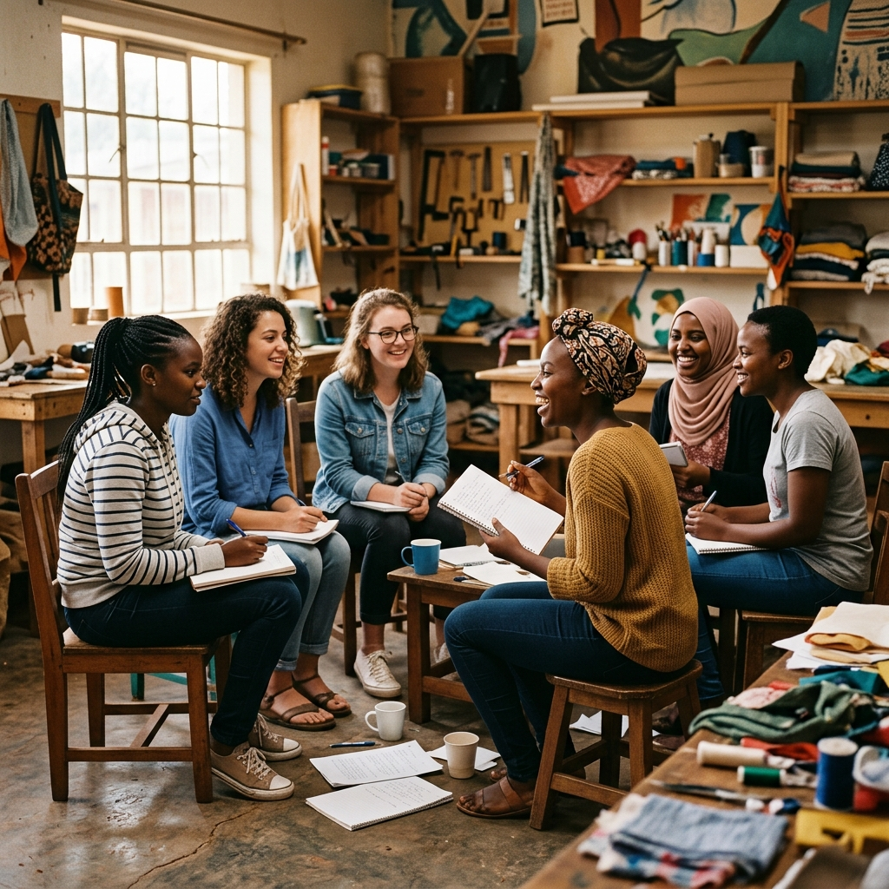

Our Promise
Support that feels human, not distant.
We work alongside women and girls with care that is practical, respectful, and rooted in local realities — from school continuity to confidence and long-term connection.
A future built with her at the center
She Can Foundation opens doors — to education, mentorship, and the steady belief that every girl's future is worth investing in.

Our Promise
We work alongside women and girls with care that is practical, respectful, and rooted in local realities — from school continuity to confidence and long-term connection.
Empowerment is not a slogan. It is access, encouragement, and the steady belief that her ambitions deserve structure around them.

Our approach
Fewer promises.About She Can Foundation
She Can Foundation expands opportunity for women and girls through education, confidence-building, and community care. Lasting empowerment happens when someone is not only inspired — but equipped.
Opening classrooms that should never have been closed.
Spaces where women are heard, guided, and valued.
Building pathways that outlast a single moment of aid.
What We Build
Three core initiatives, each designed to meet women and girls where they are — and walk forward with them.
Supporting girls at risk of dropping out — supplies, mentorship, and family-centered encouragement that keeps learning alive.
Small community groups where women ask questions, find belonging, and practice leadership in safe, consistent settings.
Practical workshops strengthening decision-making, financial confidence, and long-term self-advocacy.
How We Work
We begin with presence — understanding what each community genuinely needs before offering anything.
Girls are paired with mentors and peers who show up consistently — not just once.
Resources, skills, and confidence tools provided through thoughtful, sustained programs.
We stay. Follow-through and reliability are at the core of everything we do.
Voices From The Community

Be Part Of It
Join as a volunteer, supporter, or community partner. Even one thoughtful step can become the structure around someone's next chapter.